ممر الطرامواي
31 إشارة، كل وحدة بمعناها وبالصوت.
ممر الطرامواي
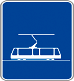
محطة الطرامواي او مكان
مخصص لوقوف الطرامواي
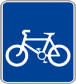
مَسلك (مَمَرْ) خاص بالدّراجات
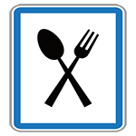
مطعم
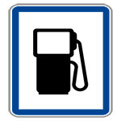
مَحَطَّة الْوَقُود
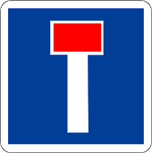
طريق مسدودة
(مسلك غير نافذ)
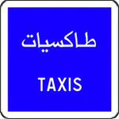
محطة سيارات الأجرة
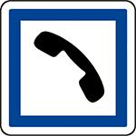
مركز هاتف
(هاتف عمومي)
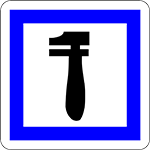
محطة إصلاحات أولية
(مركز الإصلاح)

شُبَّاك الْأَداء
(محطة الأداء)
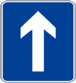
طريق ذات إتجاه واحد
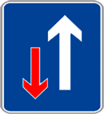
الأسبقية لصاحب السهم الأبيض
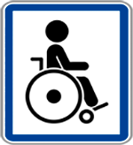
ممر خاص بذوي الإحتياجات
الخاصة
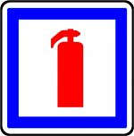
مطفأة حريق
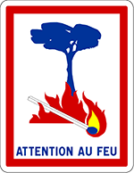
خطر نشوب حريق بالغابة
(ممنوع إيقاد النار)
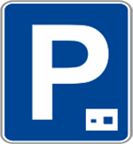
موقف سيارات بالمجان،
لمدة زمنية محددة
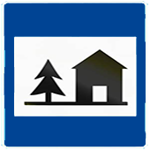
نزل الشباب
(مَأْوَى الشَّبَاب)
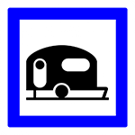
مكان خاص مركبات التخييم
(مكان التخييم بالكَرَفَانْ)
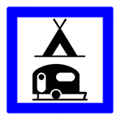
ساحة خاصة للتَّخييم
(التّخييم بالخيمة أو الكَرَفَانْ)
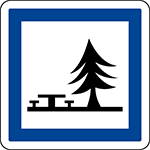
باحة للإستراحة
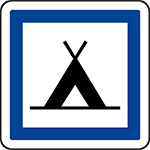
ساحة مُعَدَّة للتَّخْييم
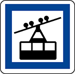
محطة نقل هوائي
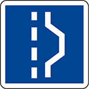
مكان الوقوف الاستعجالي
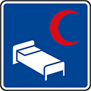
مُستَوصف أو مُسْتَشْفى
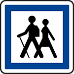
مَكَان بِدَايَة جَوْلَة
(منتزه الراجلين)
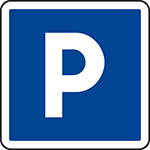
موقف سيارات
(مَكَانْ خاَص بالتَّوَقُّفْ)
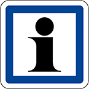
مَعلومات وَإِرْشادات
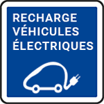
مكان شحن السيارات الكهربائية
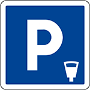
مكان للتَّوَقُّف بالأَداء
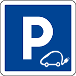
موقف السيارات الكهربائية
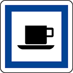
محل بيع مشروبات أو مقهى